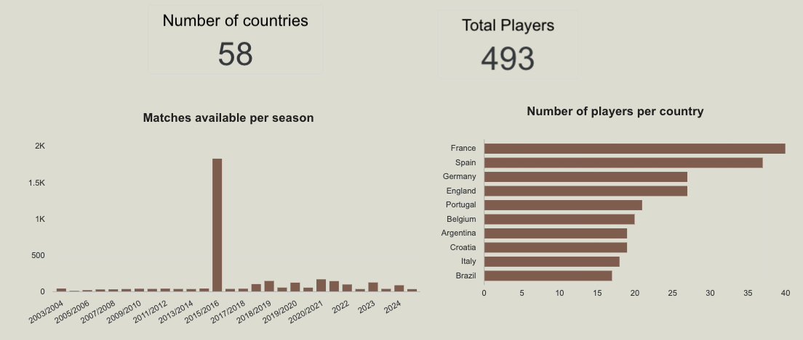
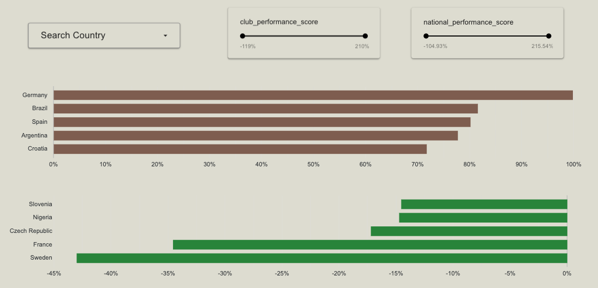

%%{init: {'themeVariables': {'fontSize': '18px'}, 'flowchart': {'nodeSpacing': 38, 'rankSpacing': 34, 'padding': 12}}}%%
flowchart LR
A[dbt: int_player_club_vs_national] --> B[consistency.py]
B --> C[analytics.consistency_scores]
C --> D[Looker Consistency Explorer]
Football Analytics Platform
UBC MDS Capstone 2026 — Trilemma Foundation
Ngoc Minh Quan Hoang
Li Pu
Teem Kwong
Rabindranath Duran Pons
2026-06-01
Problem & Roadmap
The gap: StatsBomb event data exists, but analysts need complex SQL to use it.
| RQ | Question | Who |
|---|---|---|
| RQ1 | Which players fit a tactical role? | Li · clustering |
| RQ2 | Which teams are in form? | Li · Archetypes dashboard |
| RQ3 | Club vs national consistency? | Rabin · Consistency Explorer |
| — | How does data get there? | Quan · dbt · Teem · Dagster + chatbot |
Data Pipeline — dbt
StatsBomb API → GCS → BigQuery → dbt (3 layers) → chatbot + dashboard
- Staging — type casts only, 1:1 mirror
- Intermediate — 270-min filter, per-90 metrics, men’s only
- Marts — ML outputs joined in
dbt = Makefile + git for SQL — version-controlled SELECTs with tests.
Orchestrated by Dagster — next slide.
Pipeline Orchestration — Dagster
Dagster = cron + Makefile dependency graph (like GitHub Actions job order)
- Weekly — full pipeline, Monday 6:00 AM UTC
- Hourly sensor — new GCS file → dbt + ML + marts only
- Hands-off for Trilemma — no manual runs
Key Result — RQ2: Tactical Archetypes
TODO (Quan): One cropped screenshot → assets/key-results-cluster.png
Crop tight: archetype labels + counts must be readable from the back of the room
5 archetypes · 5,800+ player-seasons · 15 competitions
Key Result — RQ3: Club vs National Consistency
TODO (Quan): One cropped screenshot → assets/key-results-consistency.png
Crop tight: quadrant labels + example player names readable
493 players · Elite · Club Specialist · International Specialist · Underperformer
Key Result — Plain-English Chatbot
TODO (Quan): One screenshot → assets/key-results-chatbot.png
Show the full query + answer — text must be readable
Plain English in · answers in < 10 sec · no SQL
Clustering Pipeline
RQ2: What player archetypes exist across European football?
| Step | Detail |
|---|---|
| Input | int_player_season_stats from dbt |
| Filter | ≥ 270 min · goalkeepers excluded |
| Features | 13 per-90 metrics (xG, passes, pressures, …) |
| Model | Median impute · clip outliers · Scaler → PCA → KMeans k=5 |
| Output | 5 archetypes → cluster_assignments → Looker + chatbot |
Cluster Results: 5 Archetypes
| Archetype | Style |
|---|---|
| Creative Winger | xG, dribbles, att. third passes |
| Creative Playmaker | Passes, carries, chance creation |
| Pressing Forward | Pressures, shots, defensive actions |
| Defensive Anchor | Interceptions, clearances, blocks |
| Low Activity | Below-cohort activity |
Cluster Scatter — Looker Studio
TODO (Li): One screenshot → assets/looker-cluster-scatter.png
Crop tight: PCA axes, archetype colours, and legend readable
PCA scatter · colour-coded archetypes
Player Archetypes Dashboard — Overview
TODO (Li): One screenshot → assets/looker-cluster-page1.png
Crop tight: player counts, archetype breakdown, key numbers visible
Cohort overview · archetype distribution
Player Archetypes Dashboard — Explorer
TODO (Li): One screenshot → assets/looker-cluster-page2.png
Crop tight: top players table or filters — names and stats readable
Top players by archetype · filter by position
Consistency: The Question & Pipeline
RQ3: Do players perform differently for club vs national team?
- Eligibility: ≥ 270 minutes in both contexts (~3 full matches)
- Cohort: 493 dual-context players across 58 countries
- Z-scores computed within each context (club peers vs club, national vs national)
Consistency Formulas & Results
Formulas
- \(z = (x - \mu_{\text{context}}) / \sigma_{\text{context}}\) within each context
- Performance score = Σ (z × PCA weight) — club & national axes on scatter plot
- Consistency score = \(1 - \text{mean}(|z_{\text{club}} - z_{\text{nat}}|)\) — profile similarity, not quality
Results
- 493 players · 58 countries · ~25% per quadrant
- Most consistent → profile barely changes between contexts
- Germany leads national score · Sweden lowest in cohort
Quadrant Definitions
Split cohort at medians of club & national performance (~25% each)
| Quadrant | Rule |
|---|---|
| Elite | ≥ median in both contexts |
| Club Specialist | Club ≥ median, national < median |
| International Specialist | Club < median, national ≥ median |
| Underperformer | Below median in both |
Consistency Explorer — Overview

Consistency Explorer — Quadrant View

Consistency Explorer — Country Rankings

System Architecture
TODO (Teem): One screenshot → assets/architecture-diagram.png
Crop tight: StatsBomb → GCS → BigQuery → dbt → ML → Django/Looker/Chatbot — labels readable
End-to-end pipeline · ingestion through serving
Architecture — Components
- Ingestion — StatsBomb API → GCS → BigQuery
- dbt — staging → intermediate → marts
- ML —
cluster.py+consistency.py - Serving — Django app, Looker embed, LLM chatbot
dbt Layers (Detail)
%%{init: {'themeVariables': {'fontSize': '26px'}, 'flowchart': {'nodeSpacing': 70, 'rankSpacing': 55, 'padding': 24}}}%%
flowchart LR
RAW[raw_statsbomb] --> STG[staging]
STG --> INT[intermediate]
INT --> MART[marts]
- Staging — 1:1 mirror, type casts only
- Intermediate — men’s filter, 270-min threshold, per-90 metrics
- Marts — ML outputs joined in → chatbot + Looker read here
Dagster Asset Graph
TODO (Teem): One screenshot → assets/dagster-asset-graph.png
Highlight weekly schedule + asset dependency chain — labels readable
Asset graph · ingestion → dbt → ML → marts
Dagster — How It Runs
- Asset graph — run in order: Ingestion → dbt → ML → mart refresh
full_pipeline_job— every Monday 6:00 AM UTC- Hourly GCS sensor — new match file →
post_ingestion_jobonly (no re-ingestion loop)
Chatbot Demo
TODO (Teem): One screenshot → assets/chatbot-demo.png
Full query + answer visible — text readable from back of room
Plain-English question → BigQuery answer
Chatbot — How It Works
- Engine: Groq
llama-3.3-70b-versatile - Tool-calling: English → BigQuery SQL → formatted answer
- Security:
is_safe_sqlblocks non-SELECT statements - Advanced mode: shows generated SQL for debugging
Limitations & Future Scope
- Goalkeepers — excluded from PCA clustering (
cluster = -1, archetype Goalkeeper) - Polymarket odds — manual GCS upload only; no automated ingestion yet
- Women’s football — men’s filter at intermediate layer; needs parallel dbt models
Partner Handover — What Trilemma Gets
- Fully documented GitHub repository
- Quarto final report
HANDOVER.md— component runbooksdocker compose up→ Django app + Dagster UI
Partner Handover — Repository
TODO (Teem): One screenshot → assets/handover-readme.png
README or HANDOVER.md header — setup steps readable
Thank You
Questions?
Team: Quan Hoang · Li Pu · Teem Kwong · Rabin Duran
UBC MDS Capstone 2026 · Trilemma Foundation